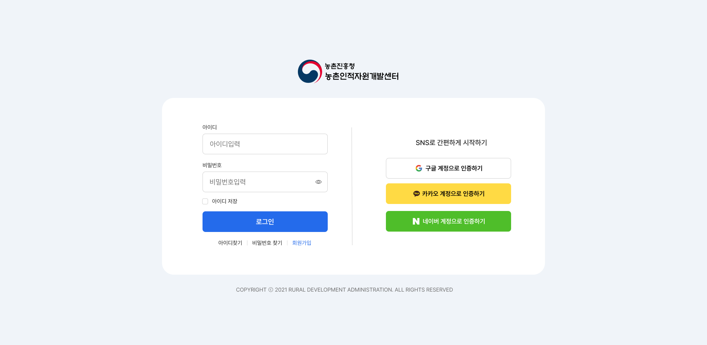
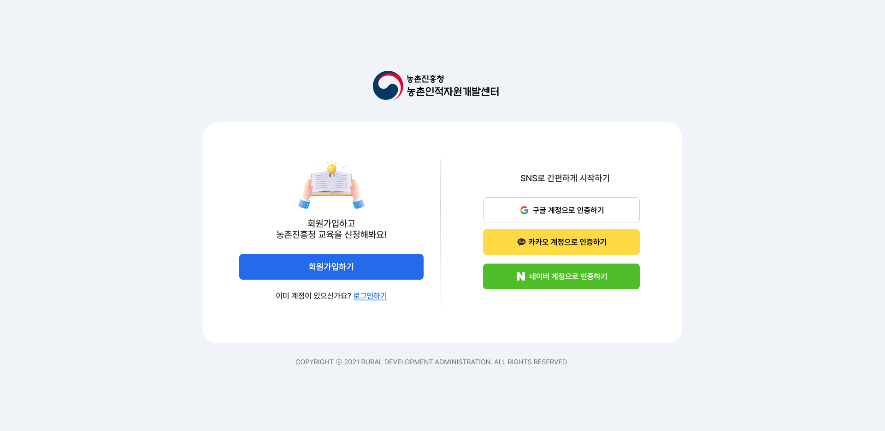

2024.10 ~ 2025.01
UI/UX 디자인 · 퍼블리싱
기획 · 디자인 · 퍼블리싱 전 과정 참여
농촌인적자원개발센터 웹사이트를 사용자 중심으로 재구성한 프로젝트입니다. 복잡하게 흩어진 정보를 정리하고, 누구나 쉽게 탐색할 수 있는 구조로 개선했습니다.
메뉴 구조가 복잡하고 직관적이지 않아 원하는 정보를 찾기 어려움
유사한 정보가 여러 페이지에 분산되어 있어 사용자 혼란 발생
핵심 기능 접근이 어려운 구조
정보 구조를 단순화하여 빠른 접근 가능
예약 기능을 하나의 흐름으로 통합
카드형 UI로 정보 인지 효율 개선
사용자 흐름 중심으로 구조 재정의
정보를 시각적으로 구분
자주 사용하는 기능을 전면 배치

기존 텍스트 중심 구조를 개선하여 카드형 UI로 재구성하고 주요 기능을 한눈에 파악할 수 있도록 설계했습니다.

기존에는 예약, 조회, 수정 기능이 각각 분리되어 있어 사용자가 여러 페이지를 이동해야 하는 불편함이 있었습니다.
이를 해결하기 위해 예약 → 조회 → 수정까지 이어지는 흐름을 하나로 통합하고 동일한 화면 내에서 작업을 이어갈 수 있도록 구조를 재설계했습니다.
페이지 이동 반복
정보 재입력 발생
하나의 흐름으로 연결
사용자 이동 최소화
이를 통해 사용자는 별도의 탐색 없이 자연스럽게 다음 단계로 이어질 수 있으며, 전체 작업 시간을 줄이고 서비스 이용 경험을 개선했습니다.
로그인, 회원가입, 계정 찾기, 정보 통합까지 이어지는 인증 과정을 하나의 흐름으로 재정리하여 사용자의 혼란을 줄이고 접근성을 개선했습니다.




일관된 UI를 위한 스타일 가이드 적용
재사용 가능한 구조 설계
다양한 디바이스 환경 지원
사용자 흐름 단순화
정보 구조 명확화
디자인 시스템 적용
단순한 화면 구현을 넘어, 사용자의 행동 흐름과 서비스 구조를 이해하고 더 자연스럽고 효율적인 경험을 만드는 데 집중했습니다.